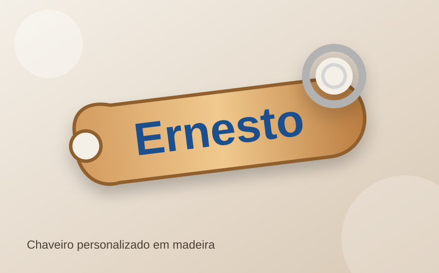
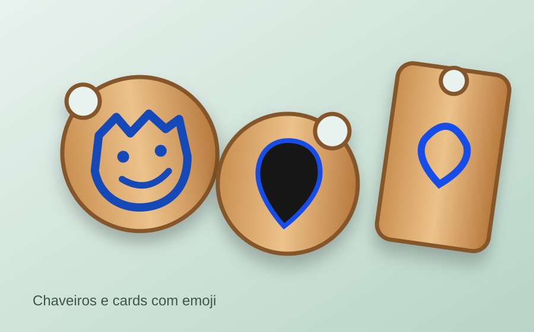
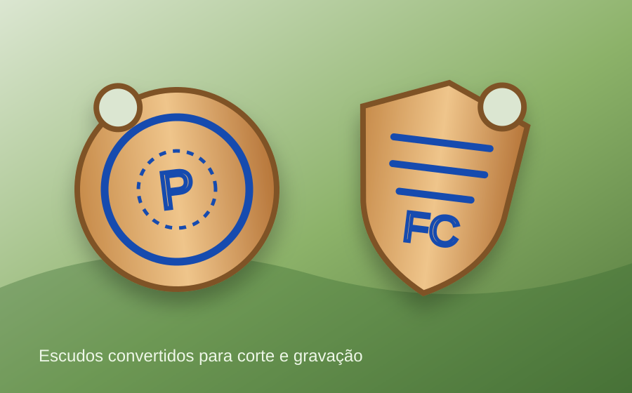
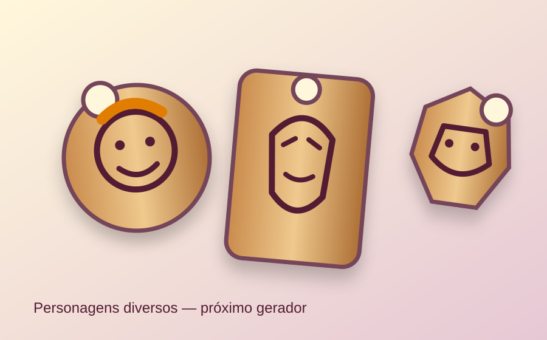
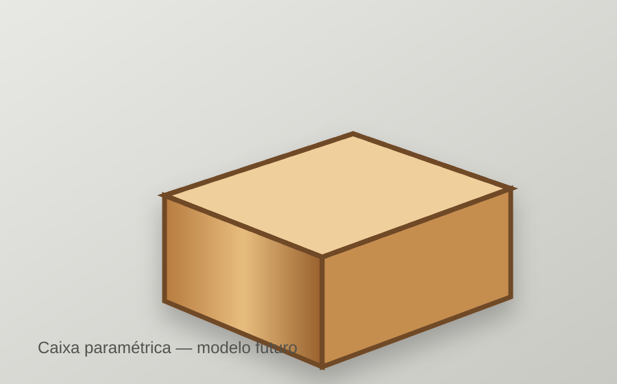

GERADORChaveiro com Nome
Crie chaveiros personalizados com diferentes fontes, contorno, argola e opção de dupla camada.
Abrir geradorUBUNTUMAKER
Coleção de modelos, geradores e ferramentas desenvolvidos para facilitar a criação de peças para corte e gravação a laser. Escolha um modelo, personalize no navegador e exporte o arquivo SVG para fabricação.
MODELOS DISPONÍVEIS
Cada modelo abre o seu próprio gerador. Os projetos podem permanecer em repositórios independentes no GitHub; esta página funciona apenas como catálogo central.

GERADORCrie chaveiros personalizados com diferentes fontes, contorno, argola e opção de dupla camada.
Abrir gerador
GERADOREscolha um emoji, ajuste a geometria e gere automaticamente os elementos para corte e gravação.
Abrir gerador
GERADORImporte um escudo vetorial, gere o contorno de corte e prepare os detalhes internos para gravação.
Abrir gerador
GERADORGerador para criação de chaveiros e cards com personagens e ilustrações diversas.
Em desenvolvimento
EM BREVEGere caixas paramétricas com encaixes tipo finger joint, configurando dimensões e outros parâmetros diretamente no navegador.
Abrir geradorCOMO UTILIZAR
Selecione um modelo ou gerador no catálogo.
Ajuste dimensões, texto, desenho e demais parâmetros.
Gere o SVG e leve o arquivo para o software da máquina.